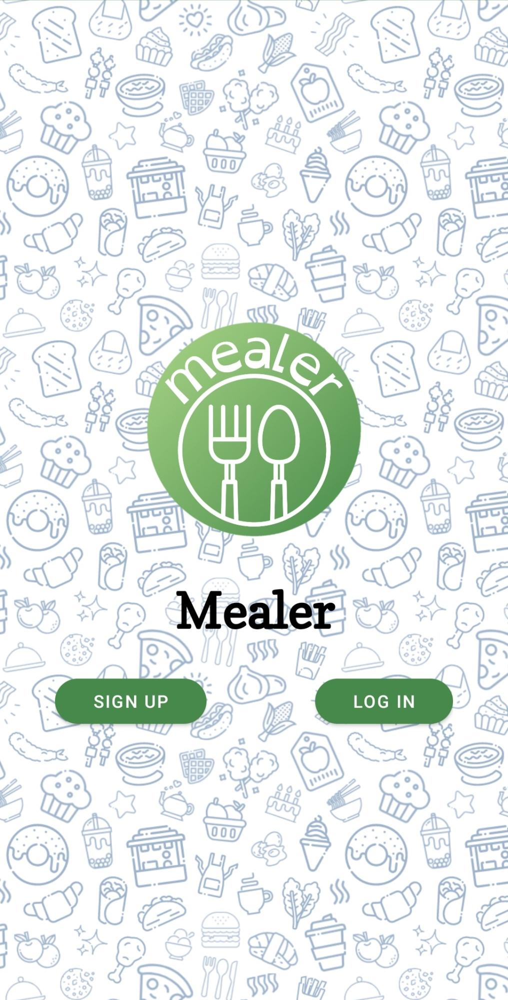
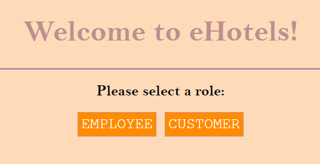

Projects
1) MEALER Android Application
For the final project of my software engineering class, I designed and developed a mock app for food ordering/pick-up in Android Studio (using Java) with five other students.
- Developed mock food order/pick-up app with Java in Android Studio
- Planned & devised domain models and use cases with UML diagrams
- Implemented UI logic for 3 types of users (clients/cooks/administrator)
- Validated all data-collection forms and methods
- Stored & retrieved information efficiently with Firebase
- Debugged app & performed glass-box testing with JUnits
2) Hotel Management Web Server Application
For the final project of my databases class, I designed and developed a mock web server application for a hotel management system in Intellij (using Java, JSP, HTML, and JavaScript) with two other students.
- Mocked fully functional hotel system in Java and JSP
- Designed & maintained a relational SQL database in pgAdmin
- Incorporated session variables and database authentication for login
- Optimized user data management with customer/employee profiles
- Implemented efficient searching/sorting algorithms for room listings
- Executed SQL queries and logic for rental creations
- Managed server requests (e.g. db connections) with Java servlets
3) Pacman Game

This Pacman game was made with JavaScript, HTML and CSS. It includes a user-friendly interface, as shown in the images below:


The following explains the technical aspects of creating this game:
- HTML: Used to create and divide the elements of the game, including the header, footer and game play area in the middke.
- CSS: Used to style the elements in the HTML, with id's, classes and attributes
- JavaScript: The following functions were used:
- startGame(): This function starts the game by initiating the ghost movement interval and listening for player key events.
- endGame(): This function ends the game by stopping the ghost movement interval, stopping continuous movement, and removing key event listeners.
- displayGameOver(): This function displays the game over modal.
- displayInstructions(): This function displays the instructions modal.
- resetGame(): This function resets the game by re-initializing game variables and starting a new game.
- createGame(n): This function implements the game board.
- renderGame(game): This function renders the game board to the HTML.
- moveLeft(game): This function shifts the Pacman char one position to the left.
- moveRight(game): This function shifts the Pacman char one position to the right.
- moveLeftContinuous(game): This function moves the Pacman char to the left.
- moveRightContinuous(game): This function moves the Pacman char to the right.
- processMove(cellContents): This function processes the move and updates the score.
- advanceLevel(): This function advances the game to the next level and increases the speed of the ghost.
- moveGhost(): This function moves the ghost character toward Pacman.
- handleKeyDown(event): This function handles keydown events for Pacman movement.
- getRandomInt(min, max): This is a helper function that generates random ints between the given number params.